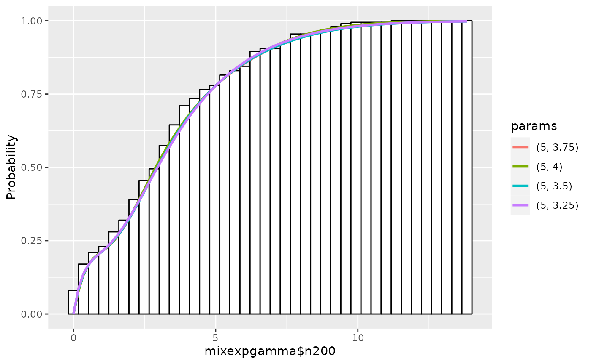

A Tutorial for `dsdp`
Satoshi Kakihara1
Takashi Tsuchiya2
October 31st, 2022
Source:vignettes/Tutorial.Rmd
Tutorial.RmdAbstract
This vignette is a tutorial for a R package dsdp,
a probability density estimation package using a maximum
likelihood method. A model of interest in this package is a family
of exponential distributions as base functions, with polynomial
correction terms. To find an optimal model, we adopt a grid search
for parameters of base functions and degrees of polynomials,
together with semidefinite programming for coefficients of
polynomials, and then model selection is done by Akaike
Information Criterion. We first give a quick overview of the
package, and then move on to a tutorial.
Overview
The main task of the package dsdp is to estimate
probability density functions from a data set using a maximum likelihood
method. The models of density functions in use are familiar Gaussian or
exponential distributions with polynomial correction terms. We call
Gaussian distribution with a polynomial Gaussian-based
model and an exponential distribution with a polynomial
Exponential-based model, respectively.
dsdp seeks parameters of Gaussian or exponential
distributions together with degrees of polynomials using a grid search,
and coefficients of polynomials using a variant of semidefinite
programming(SDP) problems. Detailed discussions of SDP problem
formulations and this type of SDP problems are found in other
vignettes.
The outline of estimation procedure is as follows.
- Create Gaussian-based or Exponential-based model from a data set.
- Explore a data set by checking the statistics and the histogram
- Provide a set of parameters of Gaussian or exponential distributions and degrees of polynomials.
- Estimate the coefficients of the polynomials for a set of parameters and then check the results by comparing Akaike Information Criterion(AIC) and plotting density functions.
- Refine the parameters and repeat 3-4 until a sufficient estimate is obtained.
We will see each process step by step in the next section. Before we move on, please install and import the package if you haven’t yet. Installation is done by
## Install from CRAN
install.packages("dsdp")Importing the package is done by
This package requires ggplot2 for displaying histograms
and density functions. ggplot2 is a part of tidyverse (Wickham et al. 2019), a de facto
standard for data wrangling in R. Our plot method returns
ggplot2 objects, so if you plan to add the title or change
the labels in the graphs, it is better to import ggplot2
too.
A Tutorial
In this section, we will see estimation procedures in Gaussian-based model and Exponential-based model in details. Essentially, they are same in computations, yet there are subtle differences in practice.
Gaussian-based Model
The density function of Gaussian-based model is \[ p(x; \boldsymbol{\alpha}) \cdot N(x; \mu, \sigma^2), \] where \(p(x; \boldsymbol{\alpha})\) is a polynomial with a coefficient vector \(\boldsymbol{\alpha}\), and \(N(x; \mu, \sigma^2)\) is Gaussian distribution with mean \(\mu\) and variance \(\sigma^2\): \[ N(x;\mu, \sigma^2) := \frac{1}{\sigma \sqrt{2\pi}} \exp\left(-\frac{(x-\mu)^2}{2\sigma^2}\right). \]
The aim of estimation is to find a good set of parameters: \(\boldsymbol{\alpha}\), \(\mu\), and \(\sigma\). To this end, we first provide a coarse set of parameters of base functions, namely, \(\mu\) and \(\sigma\), along with degrees of polynomials, and then compute the coefficients of polynomials \(\boldsymbol{\alpha}\), to get a rough idea of the model. And subsequently, refine the set of parameters and repeat above process until sufficient estimate is obtained.
A Creation of a model
We first create Gaussian-based model from a data set. The name of R’s
S3 class for Gaussian-based model is gaussmodel, and we
refer to the method of gaussmodel as
method.gaussmodel, for example,
summmary.gaussmodel, plot.gaussmodel,
estimate.gaussmodel, func.gaussmodel.
There are two scenarios for model creations. One is to create a model from only a data set, and the other is to create a model from a data set and its corresponding frequency data. Let’s see model creations in examples.
In the first case, we use a data set mix2gauss$n200,
which contains 200 realizations of bimodal mixed Gaussian distributions,
to create R’s S3 class gaussmodel object
gm1.
## Create gaussmodel object from a data set mix2gauss$n200
gm1 <- gaussmodel(data=mix2gauss$n200)The object gm1, an instance of a S3 class
gaussmodel, contains the data and parameters to be
estimated.
Similarly, in the second case, we use
mix2gaussHist$n200p for data points and
mix2gaussHist$n200f for their corresponding frequencies, to
create gaussmodel object gm2.
## Create gaussmodel object from a data set mix2gaussHist$n200p and
## its frequencies mix2gaussHist$n200f
gm2 <- gaussmodel(mix2gaussHist$n200p, mix2gaussHist$n200f)Exploring a data set
A summary of gm1 is displayed:
## Display the summary of a data set
summary(gm1)## SUMMARY
## Name: mix2gauss$n200
## The number of Data: 200
## Mean Std.
## 0.4503117 1.022398
## Quantile:
## 0% 25% 50% 75% 100%
## -2.1092675 -0.2774186 0.7110494 1.2108179 2.0967254
## Quantile of Scaled Data:
## 0% 25% 50% 75% 100%
## -2.5035068 -0.7117881 0.2550257 0.7438459 1.6103458As a name suggests, summary.gaussmodel shows the basic
statistics of a data set. It prints out the quantiles of standardized
data as well as original data. Here standardization means rescaling of
data so as to have a mean 0 and a standard deviation 1.
The histogram of the data is displayed:
## Draw a histogram of the data set
plot(gm1)## Warning: The dot-dot notation (`..density..`) was deprecated in ggplot2 3.4.0.
## ℹ Please use `after_stat(density)` instead.
## ℹ The deprecated feature was likely used in the dsdp package.
## Please report the issue at <https://github.com/tsuchiya-lab/dsdp/issues>.plot.gaussmodel can plot scaled data as well as original
data by setting scaling=TRUE.
Providing the set of parameters
Before estimation, we need to provide a set of parameters, means, standard deviations, and degrees of polynomials, to compute the coefficients of polynomials. ````
## A vector of degrees of polynomials
deglist <- c(2, 4, 6)
## A vector of means in Gaussian distributions
mulist <- c(-0.5, 0, 0.5)
## A vector of standard deviations in Gaussian distributions
sdlist <- c(0.75, 1.0, 1.25)A vector deglist indicates degrees of polynomials, in
this case 2, 4, 6. In Gaussian-based model, a positive even
integer up to around 20 is okay. Note that large degrees can cause
numerical difficulty. mulist is a vector of means of
Gaussian distribution, and sdlist is a vector of standard
deviations of Gaussian distribution, so the element of
sdlist should be positive.
Note that we set these data for estimation of scaled data, as we will mention later.
Estimation
Providing these parameter sets, we are now ready to estimate the model.
## Do estimation
## Output messages are suppressed for brevity
gm1 <- estimate(gm1, deglist=deglist, mulist=mulist, sdlist=sdlist, scaling=TRUE)The computation of the coefficients of the polynomials is done for
all of the combinations of the parameter sets deglist,
mulist, and sdlist, 9 cases in this example.
By setting scaling=TRUE, estimation is done for scaled
data, not for original data, as mentioned before. The result is sorted
according to Akaike information criterion(AIC) (Akaike 1974). AIC is widely used
criterion for model selection so as to avoid overfitting by penalizing
the number of free parameters.
Let’s see the result of estimation.
## Show the summary of results up to 5
summary(gm1, nmax=5, estonly=TRUE)## ESTIMATION
## Name: mix2gauss$n200
## deg mu1 sig1 mu sig aic accuracy
## 1 6 0.96151051 0.7667982 0.5 0.75 149.9553 7.159002e-08
## 2 6 0.45031175 0.7667982 0.0 0.75 150.2469 7.345730e-08
## 3 4 0.45031175 0.7667982 0.0 0.75 150.9287 5.479310e-08
## 4 6 -0.06088702 0.7667982 -0.5 0.75 152.5820 7.559624e-08
## 5 4 -0.06088702 0.7667982 -0.5 0.75 157.0336 5.499543e-08(nmax=5 limits top 5 estimates, and
estonly=TRUE suppresses the basic statistics.)
The columns of deg, mu1 and
sig1 indicate the degree of polynomials, mean, and standard
deviation, respectively. And the column of mu and
sig indicate the scaled mean and standard deviation,
respectively.
The column of aic indicates AIC and that of
accuracy does the accuracy of underlying SDP solver, whose
value around \(1.0^{-7}\) is sufficient
for estimation under IEEE 754
double precision. If sufficient accuracy is not achieved because of
numerical difficulty, set recompute=TRUE and
stepsize=c(0.4, 0.2), for example, and try
recomputation.
## This is demonstration for recomputation
## Not Executed
gm1 <- estimate(gm1, deglist=deglist, mulist=mulist, sdlist=sdlist, scaling=TRUE,
recompute=TRUE, stepsize=c(0.4, 0.2))The flag stepsize indicates the vector of step sizes of
the underlying SDP solver. The smaller the values are, the better the
chances of successful estimation, but the slower the computation is. The
default value of stepsize is c(0.5, 0.3),
which is enough in many cases. We will not discuss the implementation
details here, but if the user sets stepsize by oneself, the
user should set the values smaller than default values and the length of
two is enough.
The numbers 1,2,3,… in the leftmost column indicate the indices of
estimates ordered by AIC. First row is the best estimate, second row is
the second best, so on, and these numbers can be used in
plot.gaussmodel or func.gaussmodel to
designate the estimates to be plotted or evaluated, respectively.
To see the graphs of estimated densities along with the histogram, simply type:
plot(gm1)By default, plot.gaussmodel plots up to best 4 estimated
density functions. In the legend, the color of graphs are displayed in
increasing order of AIC. For example, in this graph, the estimation with
the degree 6, mean 0.96151, standard deviation 0.76680 is the best
one.
By setting scaling=TRUE, it can plot a scaled data, like
scaled graphs.
plot(gm1, scaling=TRUE)Similarly, in the legend, the color of graphs are displayed in increasing order of AIC. For example, in this graph, the estimation with the degree 6, mean 0.5, standard deviation 0.75 is the best one.
Refine estimation
We continue to estimate further by adding the degree 8 and refining
mulist=seq(0, 0.5, by=0.1) and
sdlist=seq(0.6, 0.9, by=0.1). Here seq command
generates the vector starting from 0, incrementing by 0.1, and ending
with 0.5, in case of seq(0, 0.5, by=0.1).
## Do estimation
## Output messages are suppressed for brevity
gm1 <- estimate(gm1, c(4, 6, 8), seq(0, 0.5, by=0.1), seq(0.5, 1, by=0.1),
scaling=TRUE)Note that parameters already estimated are skipped in
estimate.gaussmodel and we omit argument names.
The summary of estimation is displayed:
## Show the summary of results up to 5
summary(gm1, nmax=5, estonly=TRUE)## ESTIMATION
## Name: mix2gauss$n200
## deg mu1 sig1 mu sig aic accuracy
## 1 8 0.4503117 0.5111988 0.0 0.5 148.0353 7.603908e-08
## 2 4 0.5525515 0.7156783 0.1 0.7 148.3883 5.332699e-08
## 3 4 0.4503117 0.7156783 0.0 0.7 148.9077 5.384915e-08
## 4 4 0.6547913 0.7156783 0.2 0.7 149.4495 5.285857e-08
## 5 8 0.4503117 0.6134385 0.0 0.6 149.5980 6.341800e-08The graphs are displayed:
plot(gm1)We continue to do estimation by refining parameters and checking estimates and graphs.
## Do estimation
## Output messages are suppressed for brevity
gm1 <- estimate(gm1, c(4, 6, 8), seq(0, 0.2, by=0.05), seq(0.6, 0.8, by=0.05),
scaling=TRUE)
## Show the summary of results up to 5
summary(gm1, nmax=5, estonly=TRUE)## ESTIMATION
## Name: mix2gauss$n200
## deg mu1 sig1 mu sig aic accuracy
## 1 8 0.4503117 0.5111988 0.00 0.50 148.0353 7.603908e-08
## 2 4 0.5525515 0.7156783 0.10 0.70 148.3883 5.332699e-08
## 3 4 0.6547913 0.7667982 0.20 0.75 148.4273 5.429469e-08
## 4 4 0.5014316 0.7156783 0.05 0.70 148.5121 5.360879e-08
## 5 4 0.6036714 0.7667982 0.15 0.75 148.5294 5.448186e-08
plot(gm1)According to above results, we confine the degrees of polynomials
only to 4, and set mulist=seq(0, 0.2, by=0.025) and
sdlist=seq(0.7, 0.8, by=0.01).
## Do estimation
## Output messages are suppressed for brevity
gm1 <- estimate(gm1, c(4, 6, 8), seq(0, 0.2, by=0.025), seq(0.7, 0.8, by=0.01),
scaling=TRUE)
## Show the summary of results up to 5
summary(gm1, nmax=5, estonly=TRUE)## ESTIMATION
## Name: mix2gauss$n200
## deg mu1 sig1 mu sig aic accuracy
## 1 8 0.4503117 0.5111988 0.000 0.50 148.0353 7.603908e-08
## 2 4 0.6036714 0.7463502 0.150 0.73 148.1563 5.402242e-08
## 3 4 0.5781114 0.7361262 0.125 0.72 148.1631 5.390074e-08
## 4 4 0.6036714 0.7361262 0.150 0.72 148.1694 5.373495e-08
## 5 4 0.6292313 0.7463502 0.175 0.73 148.1959 5.394311e-08
plot(gm1)We stop doing estimation here.
Some Notes
Using plot.gaussmodel, we can plot cumulative
distribution functions by cum=TRUE:
plot(gm1, cum=TRUE, nmax=1)For more details, see ?plot.gaussmodel.
func.gaussmodel computes the values of density and
cumulative distribution of desired estimate. For example,
x <- seq(-4, 4, by=0.1)
## Compute the density of 1st estimate
y_pdf <- func(gm1, x, n=1)
## Compute the cumulative distribution of 1st estimate
y_cdf <- func(gm1, x, cdf=TRUE, n=1)Of course, we can compute the desired estimate by designating
n=k for kth estimate shown in
summary.gaussmodel.
Exponential-based Model
The density function of Exponential-based model is \[ p(x; \boldsymbol{\alpha}) \cdot \mathrm{Exp}(x; \lambda), \] where \(p(x; \boldsymbol{\alpha})\) is a polynomial with a coefficient vector \(\boldsymbol{\alpha}\), and \(\mathrm{Exp}(x; \lambda)\) is an exponential distribution with rate parameter \(\lambda\): \[ \mathrm{Exp}(x;\lambda) := \lambda e^{-\lambda x}, \quad x \in S = [0, \infty). \]
The aim of estimation is to find a good set of parameters: \(\boldsymbol{\alpha}\), \(\lambda\). To this end, we first provide a coarse set of parameters of base functions, namely, \(\lambda\), and a degree of polynomials, and then compute the coefficients of polynomials \(\boldsymbol{\alpha}\), to get a rough idea of the model.
A Creation of a model
The creation of Exponential-based model from a data set is same as that of Gaussian-based model. We will show the two scenarios, one is to create a model from only a data set, and the other is to create a model from a data set and its corresponding frequency data, in sequel.
In the first case, we use a data set mixexpgamma$n200,
which contains 200 realizations of mixture of an exponential
distribution and a gamma distribution, to create R’s S3 class
expmodel object em1.
em1 <- expmodel(mixexpgamma$n200)The object em1 of a S3 class expmodel
contains the data and parameters to be estimated.
Similarly, in the second case, we use
mixExpGammaHist$n800p for data points and
mixExpGammaHist$n800f for their corresponding frequencies,
to create expmodel object em2.
em2 <- expmodel(mixExpGammaHist$n800p, mixExpGammaHist$n800f)Exploring of a data set
A summary of em1 is displayed:
## Display the summary of a data set
summary(em1)## SUMMARY
## Name: mixexpgamma$n200
## The number of Data: 200
## Mean Std.
## 3.297944 2.491842
## Quantile:
## 0% 25% 50% 75% 100%
## 0.007558929 1.395016398 3.076594706 4.588611178 11.529857185
## Quantile of Scaled Data:
## 0% 25% 50% 75% 100%
## 0.002292013 0.422995795 0.932882670 1.391355136 3.496074388As a name suggests, summary.expmodel shows the basic
statistics of a data set. It prints out the quantiles of scaled data as
well as original data. Here the scaling is to divide the data by the
mean of the data.
The histogram of the data is displayed:
## Draw a histogram of the data set
plot(em1)plot.expmodel can plot scaled data as well as original
data by setting scaling=TRUE.
Providing the set of parameters
Before estimation, we need to provide a set of rate parameters, and degrees of polynomials, to compute the coefficients of polynomials.
## A vector of degrees of polynomials
deglist <- c(2, 3, 4)
## A vector of rate parameters of exponential distributions
lmdlist <- c(0.5, 1, 2, 4)deglist is a vector of degrees of polynomials, in this
case 2, 3, 4. In Exponential-based model, a positive
integer up to around 20 is okay. Note that large degrees can cause
numerical difficulty. lmdlist is a vector of means of
exponential distributions, so the element of lmdlist should
be positive.
Also note that the rate parameters to be passed to an
estimate.expmodel method are applied to internally scaled
data, not original data.
Estimation
Providing these parameter sets, we are now ready to estimate the model.
## Do estimation
## Output messages are suppressed for brevity
em1 <- estimate(em1, deglist=deglist, lmdlist=lmdlist)The computation of the coefficients of the polynomials is done for
all of the combinations of the parameter sets deglist,
lmdlist, 12 cases in this example. The result is sorted
according to Akaike information criterion(AIC)
Let’s see the result of estimation.
## Show the summary of results up to 5
summary(em1, nmax=5, estonly=TRUE)## ESTIMATION
## Name: mixexpgamma$n200
## deg lmd aic accuracy
## 1 4 2 185.4038 9.552443e-08
## 2 4 4 185.4254 9.152939e-08
## 3 3 4 191.2761 7.245070e-08
## 4 2 2 192.7590 5.681183e-08
## 5 3 2 193.7590 7.548828e-08(nmax=5 limits top 5 estimates, and
estonly=TRUE suppresses the basic statistics.)
Next see the histogram.
plot(em1)Refine estimation
We continue to estimate further by adding parameters. As we see in
estimate.gaussmodel, paramters already estimated are
skipped.
## Do estimation
## Output messages are suppressed for brevity
em1 <- estimate(em1, c(3, 4, 5, 6), c(1, 2, 4, 8))The summary of the estimation is:
## Show the summary of results up to 5
summary(em1, nmax=5, estonly=TRUE)## ESTIMATION
## Name: mixexpgamma$n200
## deg lmd aic accuracy
## 1 5 4 183.0460 6.715532e-08
## 2 6 4 183.9109 9.767674e-08
## 3 6 2 184.7760 6.458883e-08
## 4 4 2 185.4038 9.552443e-08
## 5 4 4 185.4254 9.152939e-08The graphs are:
plot(em1)
We further confine parameters as follows:
## Do estimation
## Output messages are suppressed for brevity
em1 <- estimate(em1, c(5, 6), seq(3, 4, by=0.25))And see the summary of estimation:
## Show the summary of results up to 5
summary(em1, nmax=5, estonly=TRUE)## ESTIMATION
## Name: mixexpgamma$n200
## deg lmd aic accuracy
## 1 5 3.75 183.0320 6.051333e-08
## 2 5 4.00 183.0460 6.715532e-08
## 3 5 3.50 183.4025 6.287455e-08
## 4 5 3.25 183.7779 5.609403e-08
## 5 5 3.00 183.9076 5.846981e-08The graphs are as follows:
plot(em1)Theoretically, we can refine estimation as you like, but we stop estimation here.
Some Notes
Using plot.expmodel, we can plot cumulative distribution
functions by cum=TRUE:
plot(em1, cum=TRUE, nmax=1)
For more details, see ?plot.expmodel.
func.expmodel computes the values of density and
cumulative distribution of desired estimate. For example,
x <- seq(0, 14, by=0.1)
## Compute the density of 1st estimate
y_pdf <- func(em1, x, n=1)
## Compute the cumulative distribution of 1st estimate
y_cdf <- func(em1, x, cdf=TRUE, n=1)Of course, we can compute the desired estimate by designating
n=k for kth estimate shown in
summary.expmodel.